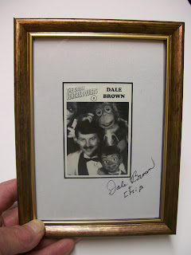

#41 Ventrilo-Card (Autographed)
5/6/2010
{kind=link}

Dale Brown
Set 4; Card #5
Dale Brown became interested in ventriloquism at the age of ten, after being inspired by Paul Winchell's television show. Dale's first figure was Jerry Mahoney.
Known as "America's Corporate Ventriloquist", Dale performs regularly at trade shows and corporate events. His unique use of puppets to communicate serious and entertaining messages in the business world has been the focus of stories in The Wall Street Journal, USU TODAY, TIME and many other business publications.
In addition, Dale has appeared on "Entertainment Tonight." "Good Morning America," The Today Show," numerous talk shows and at banquets, theaters and clubs throughout the country. He has authored several books on ventriloquism for Maher Studios. In 1989, Dale was named Ventriloquist of the Year.
Set 4; Card #5
Dale Brown became interested in ventriloquism at the age of ten, after being inspired by Paul Winchell's television show. Dale's first figure was Jerry Mahoney.
Known as "America's Corporate Ventriloquist", Dale performs regularly at trade shows and corporate events. His unique use of puppets to communicate serious and entertaining messages in the business world has been the focus of stories in The Wall Street Journal, USU TODAY, TIME and many other business publications.
In addition, Dale has appeared on "Entertainment Tonight." "Good Morning America," The Today Show," numerous talk shows and at banquets, theaters and clubs throughout the country. He has authored several books on ventriloquism for Maher Studios. In 1989, Dale was named Ventriloquist of the Year.
{kind=link}
* * * * *
The framed, autographed, Dale Brown card shown above has been won in today's drawing by John Byrd. John tells me also began his career as a ventriloquist at age ten inspired by Paul Winchell, and his first figure was a Jerry Mahoney (see photo right). Like many who once owned a Jerry, he wishes he still had it!